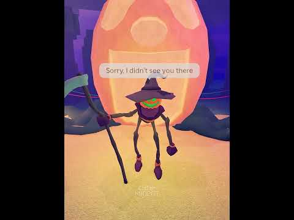

VEXU
HQ
Ce merge în Shorts
Dashboard
Blog
Calendar
Rezumat
Joc
99 Nights in the Forest
2 postări · cele mai noi primele ·
vezi în blog cu filtre
CONFIRMAT
14 octombrie 2026
99 Nights in the Forest
99 Nights in the Forest: vine Trick or Treat
17 oct 20:00 → 24 oct 15:00 RO. Update 21 oct: The Deer din 99 Nights in the Forest e unul dintre cei 9 monștri din The Hollow (eventul…

TREND SHORTS
14 octombrie 2026
99 Nights in the Forest
Lore de Halloween: poveștile scurte încă prind
Poveste de 28s în 99 Nights de la MioPotBack, ~71K. Formula: „Aceasta e povestea de Halloween a…”, cu twist la final. Pe TikTok caută „99…
Follow = Au ce bile! 💥
TikTok @vexu_online
YouTube VEXU Online
← Toate știrile
↑
 CONFIRMAT14 octombrie 202699 Nights in the Forest
CONFIRMAT14 octombrie 202699 Nights in the Forest